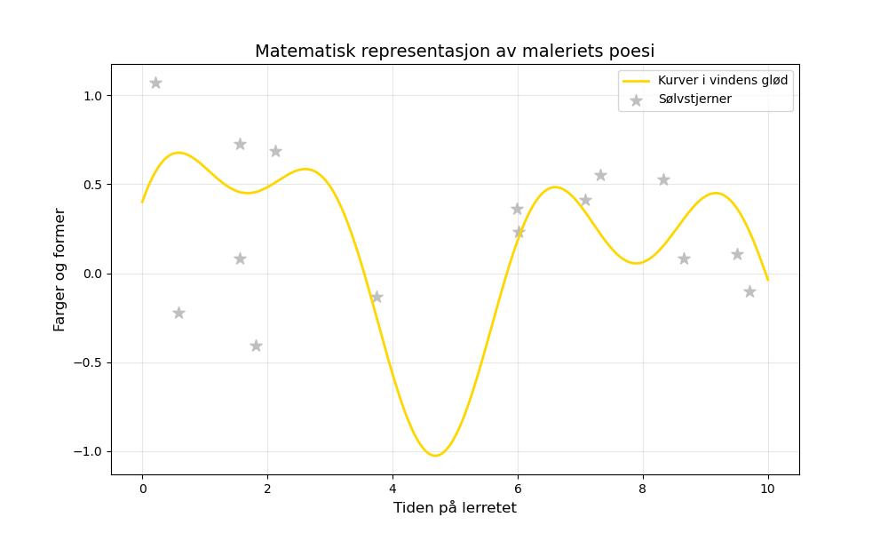

Dagens dikt
En klatt med maling, gul og rød,
danset på lerretet i vindens glød.
Den fløy i sirkler, en regnbue i mot,
med bølger og kurver som aldri forlot.
Et sølvglimt blendet kantene små,
som lysende stjerner på lærretet står.
En formel, en linje, et punkt eller to,
livet er matematikk, kan du forstå?
---

Kode
import numpy as np
import matplotlib.pyplot as plt
# Funksjon for å representere bølgene og kurvene
def poetic_wave(x):
return np.sin(x) * np.exp(-0.1*x) + np.cos(2*x) * 0.4
# Generer matematiske verdier
x = np.linspace(0, 10, 500) # x-akse verdier
y = poetic_wave(x) # y-akse basert på diktets form
# Plotter det matematiske landskapet
plt.figure(figsize=(10, 6))
plt.plot(x, y, label="Kurver i vindens glød", color="gold", linewidth=2)
# Sølvglimt representert som små stjerner
np.random.seed(42)
stars_x = np.random.uniform(0, 10, 15)
stars_y = np.random.uniform(-0.5, 1.5, 15)
plt.scatter(stars_x, stars_y, color="silver", label="Sølvstjerner", s=100, marker='*')
# Legg til etiketter og stil
plt.title("Matematisk representasjon av maleriets poesi", fontsize=14)
plt.xlabel("Tiden på lerretet", fontsize=12)
plt.ylabel("Farger og former", fontsize=12)
plt.legend()
plt.grid(True, alpha=0.3)
# Vis plottet
plt.savefig('2025-03-20-20-00-54.png')